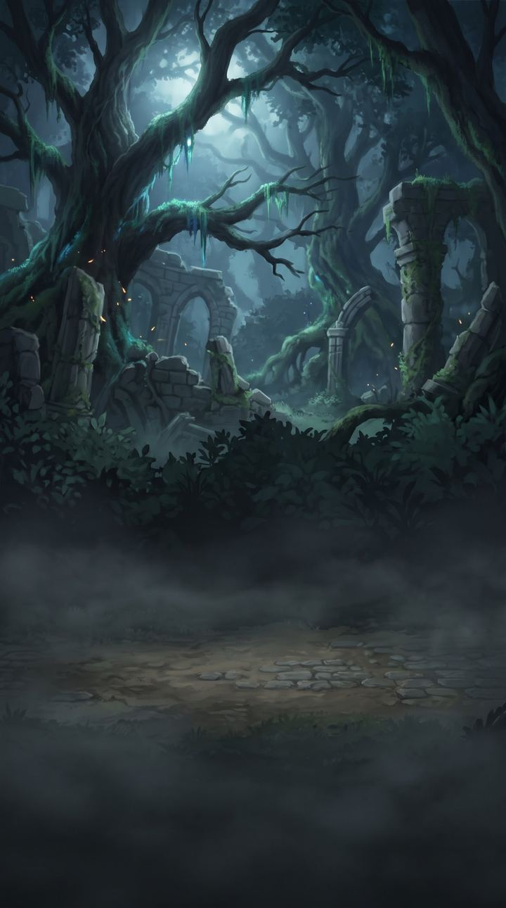
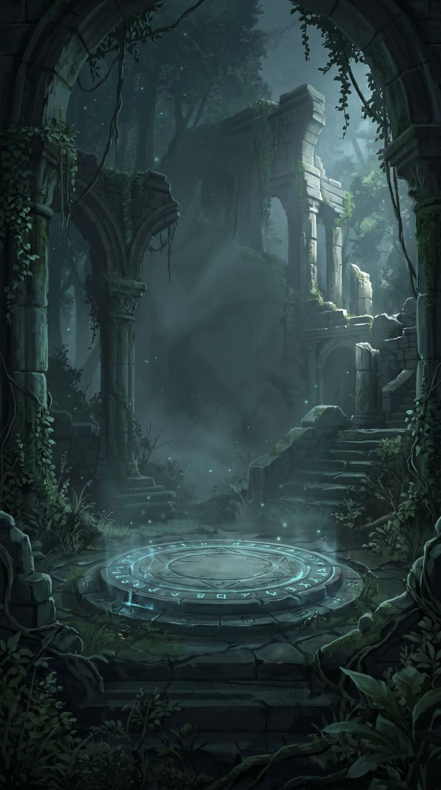

⌖
Erkundung mit GPS
Deine reale Umgebung wird Teil des Spiels. Bewege dich draußen und entdecke die Welt an deinem Standort.
Verlass die bekannten Wege. Entdecke Begegnungen, sammle die Schätze deiner Umgebung und stelle dich Kreaturen, die nur darauf warten, herausgefordert zu werden.
Ruin Walk verbindet Fantasy-Abenteuer mit deiner echten Umgebung.
In Ruin Walk wird deine Umgebung zum Schauplatz eines Fantasy-Abenteuers. Aktiviere deinen Standort und erkunde die Welt Schritt für Schritt. Sammle Rohstoffe, entdecke Kreaturen und werde mit jeder Herausforderung stärker.
Ob du dich auf Kämpfe vorbereitest, seltene Materialien suchst oder deinen Charakter weiterentwickelst – dein nächstes Abenteuer beginnt direkt vor deiner Tür.
Jeder Schritt kann dich näher an Ressourcen, gefährliche Gegner oder wertvolle Beute bringen.
Deine reale Umgebung wird Teil des Spiels. Bewege dich draußen und entdecke die Welt an deinem Standort.
Stelle dich normalen, seltenen und Elite-Monstern. Nutze Angriffe, Fähigkeiten und die richtige Taktik.
Fordere besondere Bosse heraus – mit angekündigten Angriffen, auf die du reagieren musst.
Finde Rohstoffe, baue Ressourcen ab und fertige Werkzeuge, Ausrüstung und hilfreiche Gegenstände.
Sammle Erfahrung, steige im Level auf und entwickle deinen Charakter mit Klassen und Spezialisierungen weiter.
Erfülle Aufgaben, sammle Fortschritt und verdiene Erfahrung sowie Gegenstände für deinen Weg.
Beginne als Wanderer und entscheide dich im Laufe deiner Entwicklung für eine Klasse, die zu deinem Kampfstil passt.
Stelle dich deinen Gegnern im Nahkampf. Widerstandskraft und Durchhaltevermögen sind deine Stärke.
Halte Abstand, ziele präzise und nutze deine Reichweite für entscheidende Treffer.
Entfessle mächtige Zauber und beherrsche deine Gegner mit arkaner Kraft.
Verbinde Licht und Angriff. Heile dich und halte auch lange Kämpfe durch.
Seltene Kreaturen, Elitegegner und Gebietsbosse machen jeden Ausflug zu einer möglichen Prüfung.

Gestalte deinen Charakter und finde den Weg, der zu deiner Art zu spielen passt.

Bereite dich vor, verbessere deine Ausrüstung und wage dich an stärkere Gegner.
Du brauchst ein kompatibles Gerät mit Standortfreigabe und Lust, die Welt draußen neu zu entdecken.
Starte Ruin Walk im Browser und beginne mit deinem Charakter.
Aktiviere GPS, damit deine reale Umgebung zum Spielfeld werden kann.
Sammle, kämpfe, stelle Gegenstände her und entwickle deinen Helden weiter.
Die Wege liegen vor dir. Die Kreaturen warten. Mach den ersten Schritt und entdecke, was deine Umgebung verbirgt.
✦ RUIN WALK SPIELEN